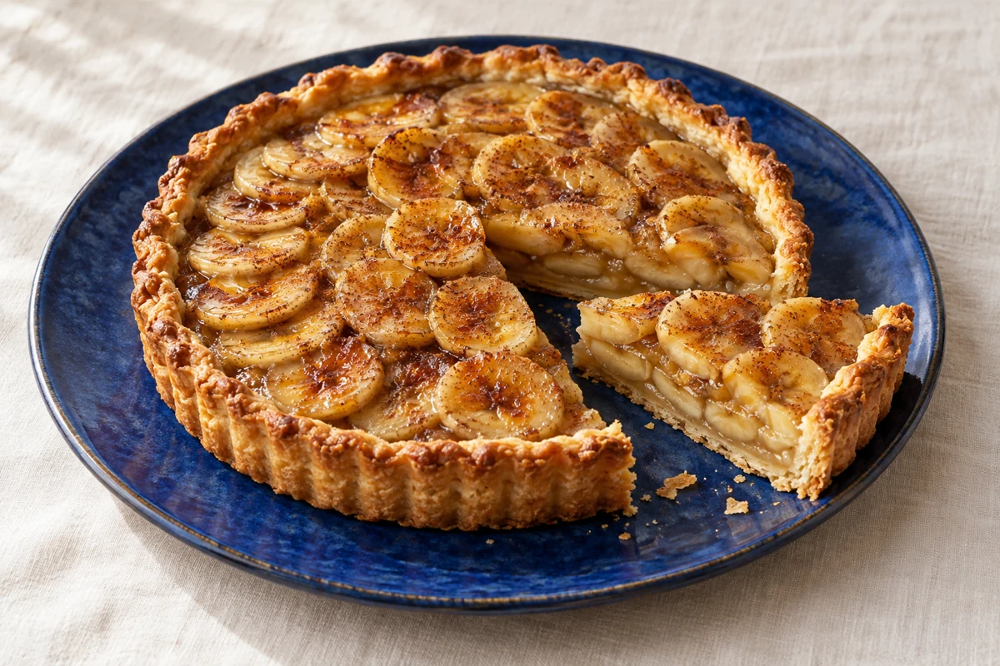

O clássico da casa01FRUTA & CANELA
Torta de Banana
Massa delicada, banana macia e um toque de canela.
Medidas sugeridas · forma de 22 cm
- Banana madura4 unidades
- Farinha de trigo1½ xícara
- Ovo2 unidades
- Manteiga gelada80 g
- Canela em pó1 colher de chá
- Leite100 ml
- Açúcar4 colheres de sopa
- Aqueça o forno a 180 °C. Misture a farinha, a manteiga e metade do açúcar até formar uma farofa. Junte 1 ovo e una a massa sem sovar.
- Forre o fundo e as laterais da forma, fure o fundo com um garfo e leve à geladeira por 15 minutos. Pré-asse por 10 minutos.
- Bata o outro ovo com o leite, o açúcar restante e a canela. Distribua as bananas em rodelas sobre a massa e despeje a mistura.
- Asse por mais 30–40 minutos, até a massa dourar e o recheio ficar firme. Espere amornar antes de cortar.
Na cozinha: bananas maduras dão mais doçura e aroma ao recheio.
O que os ingredientes oferecem
- Energia para o diaA banana e a farinha fornecem carboidratos, usados pelo corpo como fonte de energia.
- Potássio & fibrasA banana contém potássio e fibras. O mineral participa da função muscular; as fibras contribuem para o funcionamento intestinal.
- Proteínas & cálcioOs ovos e o leite contribuem com proteínas. O leite também contém cálcio, que participa da estrutura dos ossos.
A manteiga e o açúcar também fazem parte da receita. A composição de cada fatia depende das quantidades e do tamanho da porção.